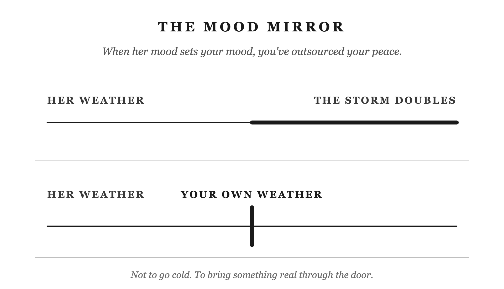

Chapter 1 gave you a gap: the three-second window between what happens and what you do about it. This chapter is about what’s been filling that gap for years, without you ever signing off on it.
Epictetus was a Stoic teacher who spent his early years as a slave and his later years running a school. His Enchiridion, a short field manual for Stoic living, opens with a line most people read once and never apply:
“Of things some are in our power, and others are not. In our power are opinion, movement towards a thing, desire, aversion, turning from a thing; and in a word, whatever are our acts. Not in our power are the body, property, reputation, offices (magisterial power), and in a word, whatever are not our own acts.” — Epictetus, Enchiridion, Ch. 1 (Long trans.)
Study that list. Her mood isn’t on either side. Not her state of mind. Not the energy she carries through the door. Not the temperature in the house when she walks in. None of it appears. Not because Epictetus overlooked it. Because other people’s inner states were never yours to work with. They were never on the list because they were never yours.
Your wife comes home from catching up with a friend and you can tell before she’s through the door. She’s lit up. She gives you a hug, a quick kiss on the cheek, and your whole night lifts. You didn’t decide to feel that. You just do.
The reverse is just as automatic. She walks in distracted, or quiet, or carrying something heavy from a long day. Not a fight, nothing said: just the weather off her. Something in you shifts before she’s said a word.
You’ve probably never named this. It just runs. And if you haven’t named it, you definitely haven’t governed it.
When someone laughs, you laugh. When someone winces, you feel a shadow of it. Walk into a room full of nervous people and your own chest tightens before you’ve identified a single reason. Call it emotional contagion: the unconscious, automatic transfer of emotional states between people. It moves through facial expressions, through tone of voice, through posture, faster than thought.
The deeper the bond, the stronger the pull. You’ve built a life with this woman. Your history is her history. Feeling her is part of that connection, and it’s not going anywhere.
Mirroring is what turns it into a problem. Feeling her mood is one thing. Becoming it is another. She comes in low and now you’re low. She comes in tense and now the whole evening bends around it. You didn’t decide any of that. It just happened. Left alone, it runs the house.
You’ve had the kind of day you can feel in your shoulders. You walk through the door still carrying it. She says something. It lands wrong. You snap. Nothing dramatic. Just edges.
She carries that into the kitchen where the kids already are. The tone she brings them isn’t the one she started the day with. The kids catch it. Pass it. The youngest, running out of targets, kicks the dog.
The dog did nothing.
Your ungoverned arrival. An entire household in distress. Ending with an animal who had no part in any of it. Nobody decided to pass it along. It moved on its own, the way these things do. It didn’t stop until it ran out of people.
Nobody meant to pass it on. You just came home carrying what the day gave you. The house caught it.
Marcus Aurelius ruled the Roman Empire for nearly two decades. Plague, war, political betrayal. He kept a private journal through all of it. It’s called Meditations. In it, he wrote about the governing part of a man. The part that decides what a moment means, and what you do about it. “The ruling Reason it is that can arouse and deflect itself, make itself whatever it will, and invest everything that befalls with such a semblance as it wills.” (Meditations 6.8, Haines trans.)
The Stoics called this the hegemonikon: the ruling faculty. Not the part that reacts, not the part that mirrors, but the part that governs.
Her mood. Her stress. What she’s carrying when you walk through the door. None of it is yours to govern. It’s external. Outside of you. You hope it goes well. Of course you do. When she’s happy, the Stoics would call that a preferred indifferent. When she’s carrying something hard, a dispreferred indifferent. Indifferent doesn’t mean you don’t care. It means this isn’t where your character gets built, good day or bad. Preferred or dispreferred, that part stays the same. Build your inner peace on these things, and you haven’t built anything. They can change on a Tuesday without warning.
Any man can hold steady when the current’s easy. Maybe you’ve called that steadiness: being okay when conditions cooperate, level when the house is quiet. But an easy current doesn’t test anything. Some men have peaceful houses and call it character. It might just be timing.
The Stoic question is different: can you keep flowing when the terrain changes? Can you stay governed when the externals stop cooperating? When she comes in carrying something heavy. When the day left a mark on you. When the house is loud and everyone needs something at once. That’s when the hegemonikon either holds or it doesn’t.
Reading this so far, some of you are building something cold in your head. The governed man as the one who doesn’t react. He watches his wife’s emotional life from behind glass. He processes everything as data and stays level while she feels everything around him. You’re picturing equanimity, staying calm and steady inside no matter what’s happening, as distance. Governance as armor.
That’s not this.
Seneca was a Stoic philosopher who spent years advising a Roman emperor. He wrote some of the most practical philosophy the tradition produced. In De Ira, his writing on anger and emotion, he put it directly: “Reason wishes to give calm to our emotions, not to root them out.” Not suppress. Not eliminate. Calm. The goal is not to stop feeling. The goal is to stop being run by feelings that are downstream of things you don’t control.
She’s sick, really sick, the miserable kind. You walk in with soup. You’re warm. You make a small, quiet joke that lightens the room without dismissing what she’s going through. You’re not swept into her illness. You’re not performing Stoic-cool from somewhere she can’t reach. You’re yourself: steady, warm, genuinely there. Your equanimity is not the distance between you. It is what you’re bringing her.
That is what care without contagion looks like.
I know the difference from the inside: absorbing her low made it larger, not smaller. Two people in a low is a lower low. The man she needed wasn’t the one matching her mood. It was the one who brought something steady into the room.
Epictetus wasn’t asking you to stop caring about your wife. He was asking you to find the part of you that’s still yours. The part that doesn’t change no matter what she’s doing when you walk through the door. Lead from there.
You can be funny in your marriage. Warm, romantic, invested, genuinely present. The governing is not armor. It’s the foundation the warmth stands on. Without it, you don’t have warmth. You have a mood that mirrors hers. It rises and falls with her weather. And she has to manage it, alongside everything else she’s already carrying.
That’s not loving her. That’s adding to her weight.
These are the things you prefer. Worth tending, every one of them. But they were never the source of your inner state. They never were. You just handed them that job, and they were never qualified for it.
Take it back. Not to go cold. Not to go distant. To bring something real through the door: a man with his own weather, who knows how to come home.

Put it into practice
Mechanism: The Mood Mirror
Conversation sentence: When her mood sets your mood, you’ve outsourced your peace to someone who never signed up to carry it.
Most men run their inner life on their wife’s emotional weather, lifting when she lifts, sinking when she sinks, without noticing they’ve handed the source of their own state to something they don’t control. The Stoic practice of governing the hegemonikon (the ruling faculty) reclaims that inner weather: not to go cold or distant, but to bring something stable through the door instead of adding to what she’s already carrying.
Lesson: The ruling faculty (the hegemonikon) governs your own inner state independent of circumstances. Steadiness is a practice you run, not a mood that depends on how things are going.
Challenge: It’s easy to mistake catching her mood for closeness. It feels loving in the moment. But matching her weather instead of bringing your own is losing jurisdiction over the one thing you actually govern: yourself.